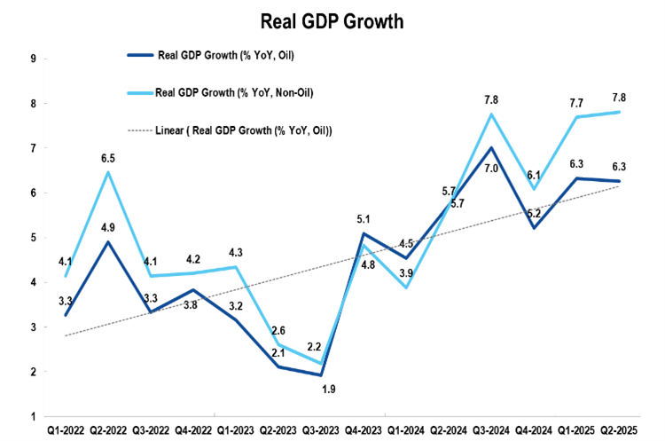
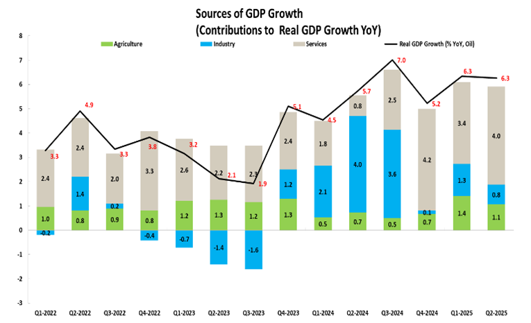
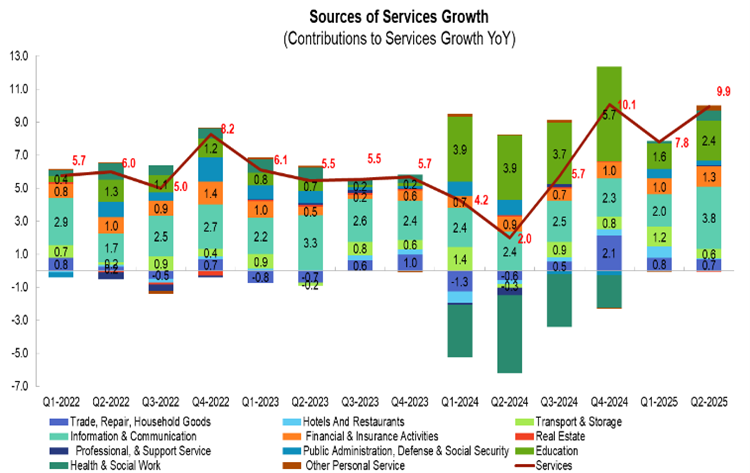
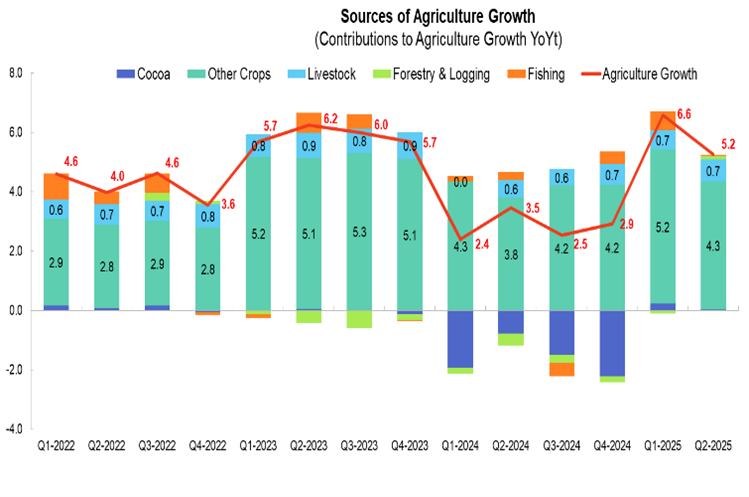
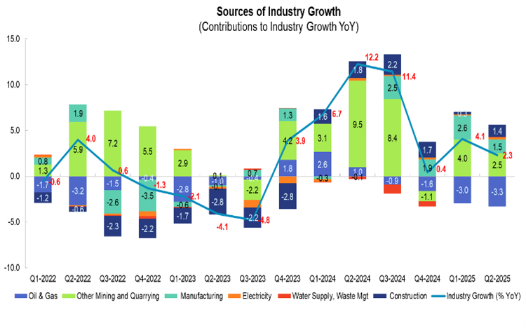

Ghana’s economic growth story is changing. For years, oil and gas dominated the narrative. Since 2024, however, the data tells a different story—one where the non-oil economy is leading growth.
In Q2 2025, Ghana’s economy grew by 6.3% year-on-year. But when oil is excluded, growth jumps to an impressive 7.8%. This marks a clear shift toward a more diversified and resilient growth model.

Historically, oil contributed significantly to Ghana’s GDP—about 7% on average between 2013 and 2022 and as much as 15% of government revenue. However, global price volatility has repeatedly exposed the fragility of this dependence.
Recent trends show a more encouraging direction: growth is increasingly driven by non-oil sectors.

The Services sector remains the backbone of Ghana’s economy, contributing over 40% of GDP. In Q2 2025, it grew by a remarkable 9.9%.
Key drivers include:

Agriculture grew by 5.2% in Q2 2025, supported primarily by the Crops sub-sector. Notably, cocoa is recovering after several quarters of decline.

The Industrial sector grew by just 2.3% in Q2 2025, largely due to continued decline in oil and gas production.
However, underlying growth is sustained by:

This transformation reduces vulnerability to external shocks and opens new pathways for inclusive growth and job creation.
---Strengthen macroeconomic stability through prudent fiscal and monetary policies.
Accelerate major projects such as roads, energy systems, and logistics networks.
Attract private capital into high-growth sectors like ICT, tourism, and manufacturing.
Enhance transparency and accountability to boost investor confidence.
Promote agri-tech, fintech, and SME integration into supply chains.
---Ghana’s non-oil sectors are proving to be the true engines of growth. The challenge now is to sustain this momentum through strategic policy actions.